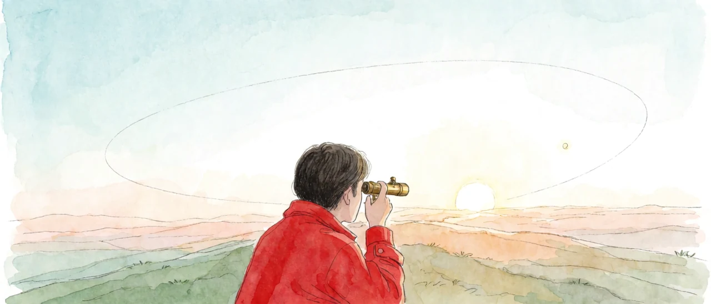
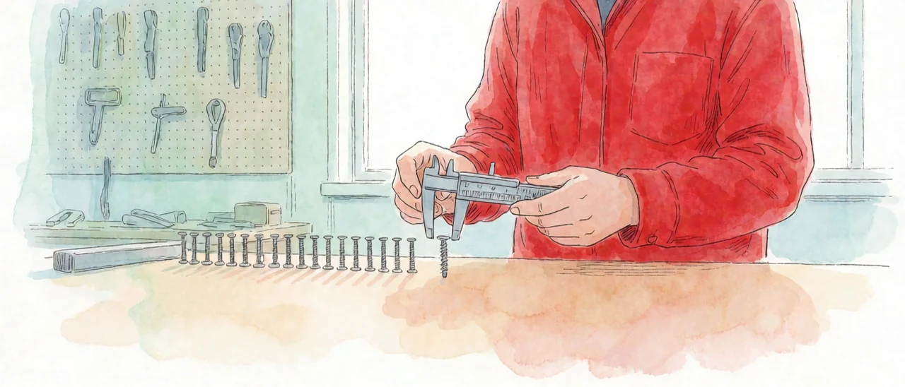
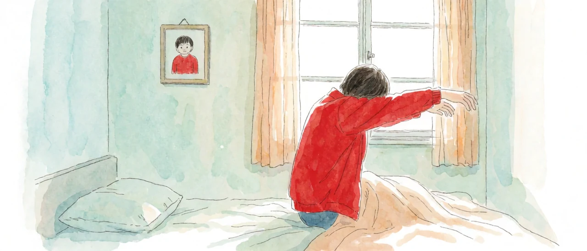

1. 참조의 층
<인지공리04_2>에서 현실의 인지연산에는 변환이 없고 참조만 있다고 적었다. 참조는 한 가지가 아니다. 유사성의 강도에 따라 느슨한 참조부터 거의 변환에 가까운 참조까지 층이 나뉜다. 변환처럼 보이는 것은 대부분 이 층의 맨 위쪽에 놓인 참조이다.
2. 수성의 궤도
고전역학의 식 가운데 많은 것이 현대물리학의 관점에서 미세오차를 피할 수 없다. 대표 사례가 수성 타원궤도의 세차운동이다. 뉴턴 역학으로 계산한 세차 각은 관측값과 어긋났고.. 아인슈타인의 상대성이론 보정으로 비로소 정확히 계산되었다.
그런데 지금도 대부분의 궤도 계산은 고전역학으로 산출한 어림값을 쓴다. 목적이 요구하는 눈금에서 그 오차가 보이지 않기 때문이다. 수성의 세차가 문제가 된 것은 관측의 눈금이 오차보다 촘촘해진 뒤였다.

3. 공산품과 공차
건축.. 토목.. 제품생산도 마찬가지이다. 공산품은 규격화된 동일 상품을 만든다는 접근인데.. 엄밀한 의미에서 동일한 상품은 존재할 수 없다. 같은 라인에서 나온 나사 두 개도 원자 수준에서는 다르다.
그래도 두 나사는 같은 나사로 팔리고 같은 구멍에 들어간다. 일정 수준 이상의 유사성을 동일성으로 취급해 주는 묵시적 합의가 작동하기 때문이다. 합의의 기준선은 공차이며.. 공차는 그 부품이 해야 할 일이 정한다. 그래서 시계 부품과 교량 볼트는 공차가 다르다.

4. 어제의 나
자아의 정체성도 크게 다르지 않다. 인간은 거의 매일 수면을 통해 각성한 인지연산이 중단되고 리셋되는 존재이다. 어제의 A는 오늘의 A와 엄밀히 말해 같은 사람이 아니다. 물리적으로도 정신적으로도 그렇다.
7살의 A와 60살의 A 사이의 이질감은 누구나 느낀다. 그 이질감이 어제와 오늘 사이에서는 무시되고.. 무시된 격차가 동일성으로 인지된다. 자아 정체성 개념의 본체는 이 무시이다.
어제의 나와 오늘의 나를 잇는 데 불변의 실체는 필요하지 않다. 정체성은 거의 변환에 가까운 참조가 매일 이어진 결과이다. <인지공리04_1>에서 배제한 실체는 동일성 판정에서도 쓰이지 않는다.

5. 동일성의 정의
세 사례는 같은 구조이다. 목적이 요구하는 눈금보다 작은 차이는 0으로 읽히고.. 0으로 읽힌 차이가 동일성으로 취급된다. 동일성은 대상에 들어 있는 성질이 아니라 축좌표계의 눈금이 내리는 판정이다. 눈금이 촘촘해지면 같던 것이 달라지고.. 눈금이 성겨지면 다르던 것이 같아진다.
같다는 것은 차이가 눈금 아래에 있다는 것이다.